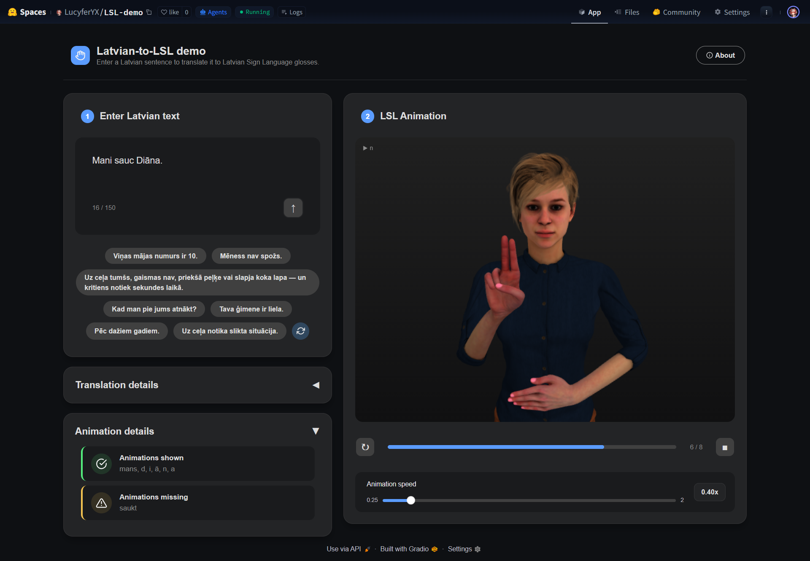

A complete working pipeline for Latvian Sign Language (LSL) recreation. From T5 model translating Latvian text into LSL glosses, to rendering sign animations on a 3D human model.
The project is split across 4 repositories that cover dataset, T5 model, 3D model, animations, handbook and Gradio web app. All repos are independent from each other. Only clone the ones relevant to your work.
LSL/ ├── LSL-demo/ # Gradio web app + Three.js viewer ├── LSL-t5/ # mT5 fine-tuning code, training notebook, dataset text files ├── LSL-blender/ # Blender rig, animation creation, baking scripts, coordinate files └── LSL-handbook/ # This documentation
| I want to… | Repo needed | Section |
|---|---|---|
| Run or modify the web demo | LSL-demo | The LSL Demo App |
| Retrain or expand the translation model | LSL-t5 → then copy model files to LSL-demo | The LSL T5 Model & The LSL Dataset |
| Add or edit sign animations | LSL-blender → then copy GLB to LSL-demo | The 3D Animation Pipeline |
| Edit this document | LSL-handbook | Handbook |
# 1. Clone the chosen repo git clone https://github.com/LucyferYX/LSL-demo # 2. Install dependencies pip install -r requirements.txt
The system consists of 3 stages: the T5 model produces glosses from text, the Blender pipeline produces animations, and the Gradio app wires both together.
The web interface is built with Gradio Blocks and hosted on Hugging Face Spaces. It lets users type a Latvian sentence, see each step of the translation pipeline, see animation details and watch a 3D avatar perform the resulting LSL sign language sequence.

Type a Latvian sentence in the text box or click one of the example chips below it. Chips are randomly sampled from the training dataset and can be refreshed with the Refresh button. Press Enter or the ↑ button. The backend preprocesses the text, runs the T5 model and builds an ordered list of LSL sign glosses for animation.
The 3D avatar (rendered in a Three.js iframe) plays each sign in sequence, crossfading smoothly between clips. Use the speed slider (0.25x-2x) to adjust playback pace. Use replay (↻) to restart and stop (■) to halt playback.
Expand Translation details to see every transformation step: the original input, preprocessed text, raw model output, and final post-processed gloss sequence. A dataset-match indicator shows whether the sentence exists in the training data and whether the T5 model output matches the glosses. Expand Animation details to see the exact sequence of LSL animation clip names played in the 3D viewer.
Before the text reaches the model, unknown words and numbers are normalised into placeholder tokens. After the model outputs glosses, those placeholders are expanded back into LSL signs.
words_list.json
are replaced with [NAME] and queued for fingerspelling (useful for proper names and
uncommon terms).[NUM],
degree symbols are rewritten as grādi, unit suffixes written against a digit
receive a separating space. Detailed in table below.[NAME] is replaced with its original word
spelled letter-by-letter into fingerspelling signs.[NUM] is expanded
to 1 or more sign words. Times, decimals, ordinals and large values each follow a
different rule, see the table below.
Below is a table for pattern matching. The pre stage runs before pattern matching.
Numbered priority stages 1-5 run in order. If match is found, the rest of the stages are skipped.
| Priority | Type | Input | Output |
|---|---|---|---|
| pre | Spaced thousands | 1 500 000 | 1500000 |
| pre | Degrees | 18°C | 18 grādi (°C/°F/°K → grādi) |
| pre | Measurement unit | 20km | 20 k m (metric/imperial units) |
| 1 | Time (HH:MM) | 9:15 | rīts deviņos 15 |
| 1 | Time (HH:MM + am/pm) | 3:35pm | diena trijos 30 5 |
| 1 | Time (hour + am/pm) | 10pm | vakars desmitos |
| 2 | Mixed alphanumeric | AB12E | a b 1 2 e |
| 3 | Decimal | 3,14 | 3 , 1 4 |
| 4 | Ordinal | 3. | trešais |
| 5 | Regular | 1599 | 1000 500 90 9 |
| 5 | Regular (large) | 2000000 | 2 1000000 |
1.25ha1.25 ha[NUM] ha[NUM] [NAME]1 . 2 5 h a10:45am[NUM]rīts desmitos 40 5The translation backbone is a fine-tuned mT5-small model (huggingface.co/google/mt5-small) that maps Latvian sentences to LSL gloss sequences with simplified lemmatised approach.
The model is prepared in 2 sequential notebooks in LSL-t5/code/.
Make sure to have downloaded mT5-small model (~1.2GB) first as instructed in LSL-t5/README.md.
It needs to be done only once and takes ~30 minutes. Run the pruning and training notebooks in order.
mt5-small1_pruning.ipynb2_training.ipynbLSL-demo/t5_model/Scans all txt/*.txt training files and keeps only tokens that actually appear,
shrinking the mT5 embedding and output layers from 250 112 tokens down to ~2 974.
Saves the pruned weights to models/mt5-pruned/ together with a vocab_map.json
that maps between the pruned IDs and the original tokenizer IDs.
Re-run whenever new training text is added so new tokens are included.
Loads the pruned model and all LV/gloss text pairs.
Splits into train (93 %) / validation (7 %), with rare glosses (≤ 2 occurrences) forced into train.
Fine-tunes using Adafactor with early stopping (patience 3).
Each run is saved to a new numbered sub-folder inside models/mt5-lsl-model/ along
with a metadata.json summary of metrics and sample predictions.
Re-run whenever new training text is added to fine-tune on the new dataset.
Copy the contents of the best run folder (e.g. models/mt5-lsl-model/4/) into LSL-demo/t5_model/.
Also copy vocab_map.json from models/mt5-pruned/ into the same folder.
The demo app needs it for token remapping at inference time.
| Parameter | Value |
|---|---|
| Optimizer | Adafactor |
| Learning rate | 1e-3 |
| LR scheduler | Linear with 10% warmup |
| Batch size | 8 |
| Max epochs | 30 (early stopping patience = 3) |
| Weight decay | 0.01 |
| Metric for best model | eval_loss (lower is better) |
| Max sequence length | 128 tokens |
At runtime the model uses beam search with 3 beams and
no_repeat_ngram_size=2 to avoid repetitive outputs. The output is a
space-separated gloss sequence; each word is then looked up in signs.json
to decide whether an animation exists for it.
The training data is a hand-curated set of paired Latvian sentences and their LSL gloss sequences.
| Batch | File | Topics |
|---|---|---|
| 1 | latvian_sentences_1.txt | Greetings, introductions, personal names |
| 2 | latvian_sentences_2.txt | Family, household, relationships |
| 3 | latvian_sentences_3.txt | Colors, hobbies, flowers, gardening, plants |
| 4 | latvian_sentences_4.txt | Time, calendar, holidays, weather, numbers |
| 5 | latvian_sentences_5.txt | Money, currency, wages, financial transactions |
| 6 | latvian_sentences_6.txt | Sign language, deafness, health, medical symptoms |
| 7 | latvian_sentences_7.txt | Apartment features, living environment |
| 8 | latvian_sentences_8.txt | Pets, animals, food |
| 9 | latvian_sentences_9.txt | Latvia, government, cities, geography, traffic |
The training data consists of paired Latvian sentences and their corresponding LSL gloss
sequences, stored as parallel text files (latvian_sentences_N.txt /
lsl_glosses_N.txt) in numbered batch files. During training, these are
concatenated into a single dataset.
| Statistic | Value (run #4) |
|---|---|
| Total sentence pairs | 1 914 |
| Source files (batches) | 9 |
| Training split | 1 782 pairs (93.1%) |
| Validation split | 132 pairs (6.9%) |
| Rare-gloss protection threshold | ≤ 2 occurrences → forced into train |
| Glosses appearing only once | 157 |
Glosses that appear in the full dataset ≤ 2 times are always assigned at least one occurrence to the training split, preventing them from being seen only during evaluation.
LSL-t5/txt/: latvian_sentences_N.txt and lsl_glosses_N.txt, where N is one higher than the current highest batch number.1_pruning.ipynb so any new tokens introduced by the new text are included in the pruned vocabulary and vocab_map.json.2_training.ipynb to fine-tune on the expanded dataset. A new numbered run folder will be created automatically inside models/mt5-lsl-model/.vocab_map.json to LSL-demo/t5_model/ and redeploy.
Sign animations are procedurally authored in Blender using an IK-driven
rig and Python scripting, then baked frame-by-frame into a single .glb file
loaded by the browser.
Every sign the system can animate is defined as an entry in data/signs.json.
Each entry specifies, for each hand side, which hand shape, location,
orientation, and movement to use, plus an optional
head action and the hold duration in frames.
// Example: sign "karte" "karte": { "right": { "shape": "Hand_L", "location": "Location_Neutral", "orientation": "Orientation_Upwards", "move": { "type": "slide", "direction": "right" } }, "left": { "shape": "Hand_L", "location": "Location_Neutral", "orientation": "Orientation_Upwards", "move": { "type": "slide", "direction": "left" } }, "head": null, "duration": 14 }
Signs where one hand is inactive use
"shape": "Start_Position" for that side. Those sides are excluded from
the Hand_Relaxed finger waypoints during baking, so inactive hands stay still.
Each hand shape is saved as a JSON pose file (LSL_Hand_*.json) containing
finger empty transforms.
Current list include shapes like Latvian fingerspelling alphabet
(A-Ž), numbers 0-10, utility shapes Hand_Relaxed and Start_Position and more.
Location files (LSL_Location_*.json) store the 3D position of arm and hand empties.
Locations can be in front of right side of chest (used for fingerspelling), top of head,
next to side, stretched out in front of the body and more.
Orientation files (LSL_Orientation_*.json) store elbow and wrist rotation values.
Orientations include palms facing up, down, left, right, forward, backward, slightly tilted and diagonal combinations.
Movements are Python functions that add keyframes on top of the base pose.
Each function accepts a start frame, duration and side.
Animations include movements like slide (ā, ē, ī, ū), halfcircle (d, j),
checkmark (č, ģ, ķ, š, ž), s_shape (s), point_down (t) and more.
Optional non-manual markers applied to the head empty.
Head actions include slight movements like Head_Nod used for signs like "mans" or slight turns to the side.
Each sign is baked as an independent clip following a fixed frame structure (at 24 fps):
| Frame | Event |
|---|---|
| Frame 1 | Start_Position. Arm and fingers at rest (neutral) |
| Frame 5 (mid-transition) | Hand_Relaxed finger waypoint. Smooths finger transition into the sign |
| Frame 9 | Full sign pose. Orientation, shape and start of movement |
| Frames 9 → 9+duration | Sign held. Movement animation plays |
| Settle frame | Sign locked at final pose (3 frames after movement end) |
| Mid-return | Hand_Relaxed finger waypoint. Smooths fingers back out |
| Last frame | Start_Position. Arm and fingers returned to rest |
Every clip starts and ends at Start_Position, so the viewer's crossfade always blends between two near-identical neutral poses. IK constraints drive the arm path during baking, Constraints are removed before GLB export and the baked bone transforms are written directly to F-curves.
The baked GLB file is loaded into a Three.js scene inside a sandboxed iframe
(LSL-demo/frontend/viewer.html). The viewer:
The avatar currently used is Kate, a royalty-free 3D character downloaded as Kate.fbx
from Mixamo and imported into Blender.
The FBX comes with a standard Mixamo armature. The sign pipeline layers IK constraints and
control empties on top of it to drive poses procedurally.
| Component | Example item | Role for example item |
|---|---|---|
| Armature | Armature | Standard Mixamo bone hierarchy imported with Kate.fbx |
| Empties | Empty_LeftArm Empty_LeftForearm Empty_LeftHand Empty_LeftHandIndex1 | A group of plain 3D axis. Bone Constraints point to these, so moving them drives the full Armature |
| Arm bones | mixamorig:RightArm | Have Bone Constraint IK with target Empty_RightArm |
| Forearm bones | mixamorig:RightForeArm | Have Bone Constraint IK with target Empty_RightHand and Copy Rotation with target Empty_RightForearm |
| Hand bones | mixamorig:RightHand | Have Bone Constraint Damped Track with target Empty_RightHand and Copy Rotation with target Empty_RightHand |
| Finger bones | mixamorig:RightHandIndex1 | Have Bone Constraint Damped Track with target Empty_RightHandIndex1 |
| Head bone | mixamorig:Head | Have Bone Constraint Damped Track with target Empty_Head |
| Shoulder bones | mixamorig:RightShoulder | Have Bone Constraint IK with target Empty_RightShoulder. They do not move, but keep the rest of the Armature stable |
All scripting code lives inside the .blend file's Scripting tab.
The script uses exec() to load each module from the scripts/ folder,
with paths resolved relative to the .blend file — so signs.json,
poses/, and scripts/ must all sit in the same directory as the .blend.
| Module | Responsibility |
|---|---|
config.py | Constants: armature name, empty object names, poses directory path |
pose_io.py | Load and save pose JSON files; apply transforms to empties |
animation_moves.py | Procedural movement functions (slide, checkmark, halfcircle, etc.) that add keyframes on top of a base pose |
sequence.py | Assembles a multi-sign animation in the viewport for preview — no baking needed |
bake.py | Full bake pipeline: keyframes IK empties → bakes bone transforms → exports all NLA tracks to lsl_model.glb |
# Load pose with Hand_*, Location_* or Orientation_* load_pose("Hand_A") load_pose("Location_Neutral") load_pose("Orientation_Upwards") # Load pose with filters, like only one finger, only one side load_pose("Hand_L", apply_fingers=True, filter_fingers=["Thumb"]) load_pose("Start_Position", side="right") # Display a sequence animation (separate signs with spaces) create_sequence("sveiks mans sauc j ā n i s") # Clear keyframes and reset to the default pose reset_animation()
# Bake all signs to GLB (main output) bake_all_signs_to_glb() # Bake a single sign for faster iteration bake_all_signs_to_glb(signs_filter=["a"]) # Preview a sentence in the viewport without baking create_sequence("labdien kā jums klājas") # Save a new hand shape / location / orientation from the current viewport pose save_pose("Hand_MyShape", include_arm=False) save_location_pose("MyLocation") save_orientation_pose("MyOrientation")
data/signs.json with the desired hand shape, location, orientation and movement for each active hand side.save_pose().bake_all_signs_to_glb() in Blender to regenerate the GLB.lsl_model.glb to LSL-demo/3d_model/lsl_3d_model.glb and redeploy.This project is built on top of several open tools and assets. Credits to the teams and creators behind them.
| Tool / Asset | Used for | Source |
|---|---|---|
| mT5-small | Base model for Latvian → LSL gloss translation | huggingface.co/google/mt5-small |
| Kate (Mixamo) | 3D avatar character used for sign animations | mixamo.com |
| Gradio | Web interface framework for the demo app | gradio.app |
| Hugging Face Spaces | Hosting platform for the live demo | huggingface.co/spaces |
| Three.js | 3D rendering in the browser (GLB playback) | threejs.org |
| Blender | Rig setup, procedural animation authoring, GLB export | blender.org |
signs.json are silently skipped during
animation — the text translation may be correct but no movement is shown for that word.